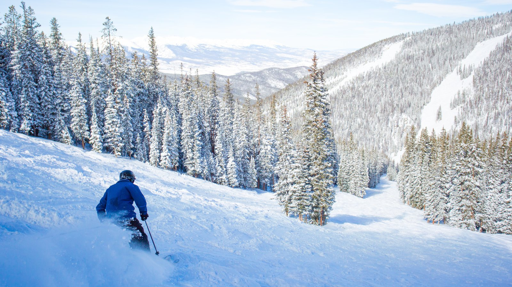
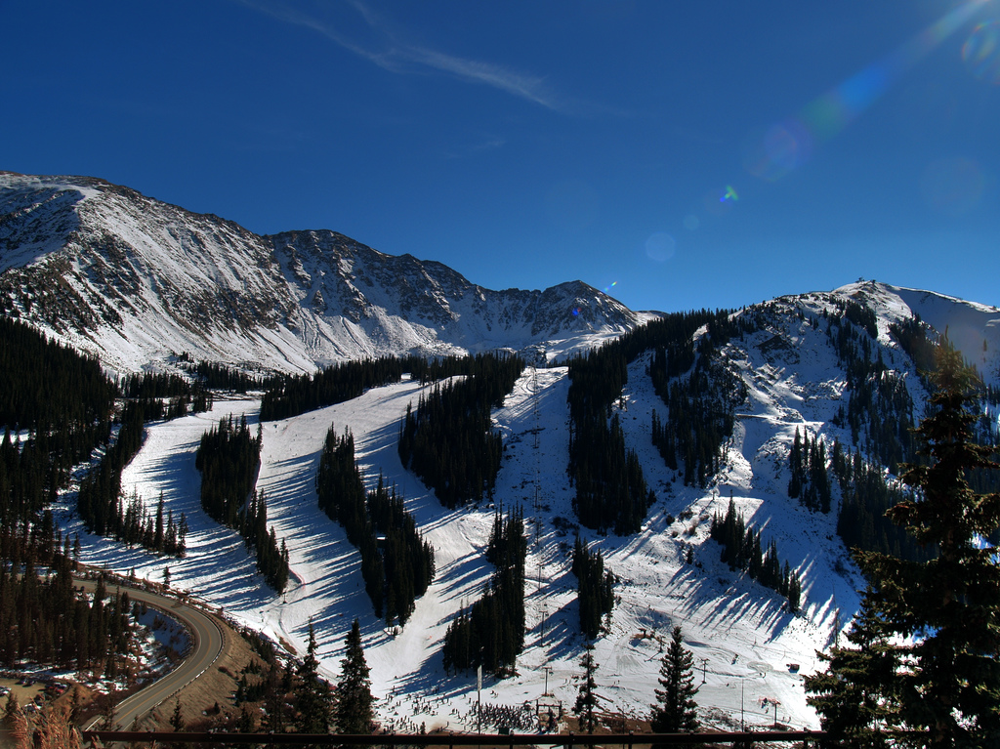

*
Breckenridge Ski Resort

Breckenridge is probably the first result that comes to mind when people think about ski resorts, and with good reason: it is genrally considered the busiest ski resort in the United States, with a very large variety of terrain to encounter. It has something for every skill level.
Keystone Ski Resort
Keystone Ski Resort is actually three seperate mountain peaks put together to create one amazing ski area. The front mountain has challenging open trails, with the second mountain offering more untamed terrain such as moguls. The third peak adds immense swaths of thick tree runs to mix to let everyone pick what they want for their riding experience.
Arapahoe Ski Area
Last but certainly not least, Arapahoe Basin (often shortened to A-Basin), isa much smaller ski area, but manages to pack just as much challenge into a more dense package. There is almost no run that could be considered boring or slow, while the other two suffer from occasional long cattracks. Also, don't forget to try the barbecue at the restaurant located at the top of the first lift!